23 Novembre 2024
Il Cinema e i Fazzoletti
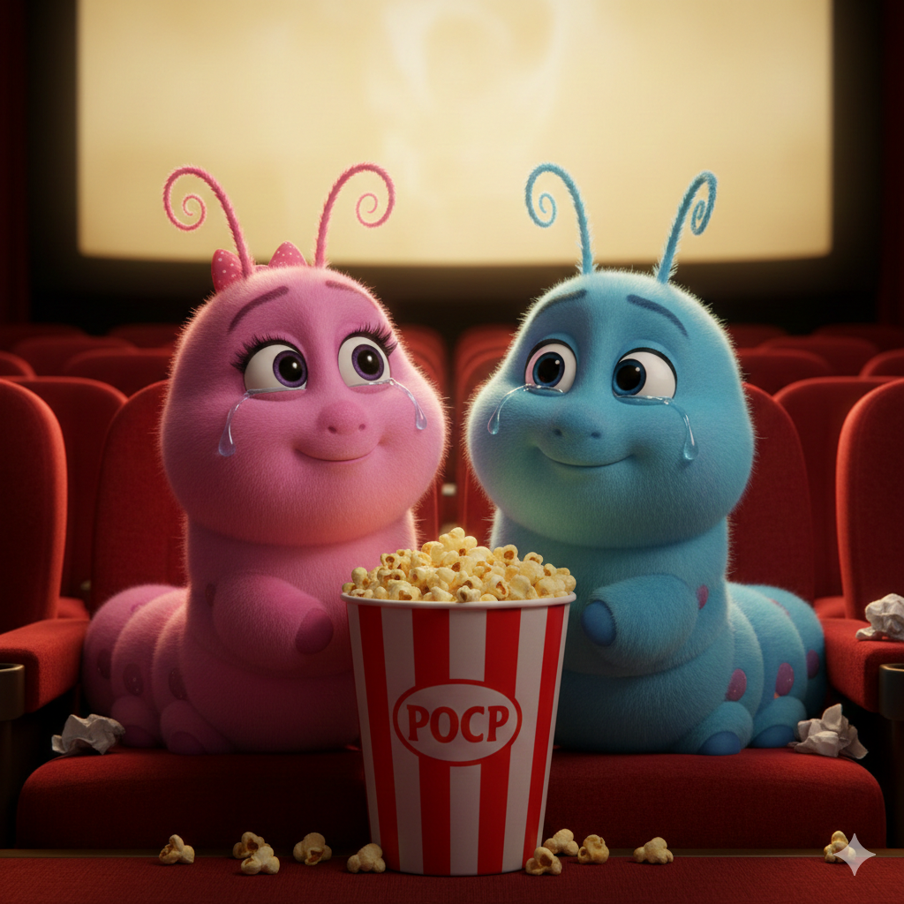
"Andiamo a vedere 'il ragazzo dai pantaloni rosa' all'Uci Cinema di Lissone? Ore 19:40" - Quel sabato sera di novembre, due bruchi si ritrovarono davanti a uno schermo luminoso. Pop corn croccanti tra le zampe, sorrisi nervosi, e la promessa di fazzoletti per asciugare lacrime. Non sapevano ancora che quelle lacrime condivise sarebbero state solo l'inizio. Alla fine del film, lui le mandò una canzone su Spotify. "Grazie Fabio, questa canzone adesso mi fa venire i brividi" rispose lei. I brividi dell'inizio.
30 Novembre 2024
133 Messaggi in Un Giorno
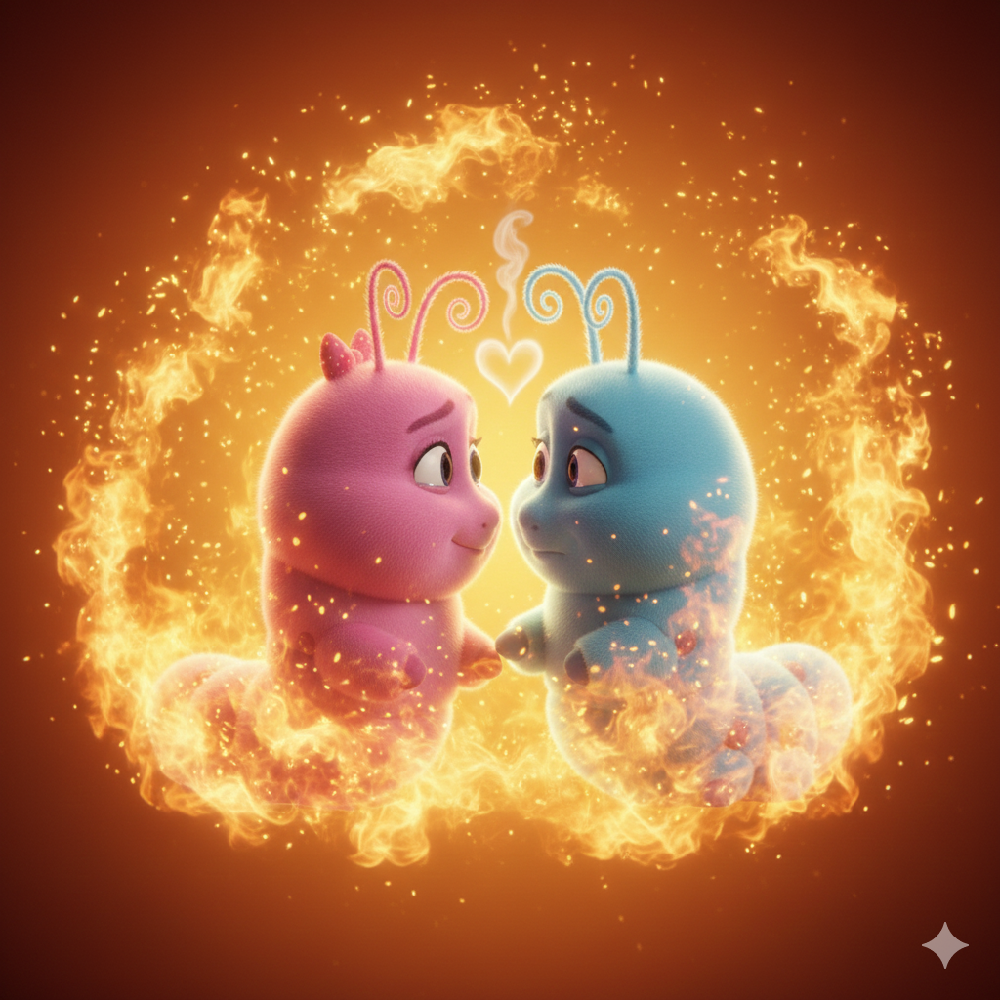
"Dormito poco, ma quel poco è stato bello, dolce. Ti immagino." - 133 messaggi. Un record. Un giorno intero passato a scriversi, a condividersi, a immaginarsi. "Ti immagino che ti riempio di baci" scrisse lei. Parlavano di spiritualità, di Vipassana, di tantra, di crescita. "Ti ringrazio ogni tua esperienza fino ad oggi è sempre stata affine a quello che sento 🤍❤️". E poi: "Ogni volta che ti sento è come se accendessi fuoco dentro di me" 🔥 Il fuoco era stato acceso.
1 Dicembre 2024
In Una Dimensione Parallela
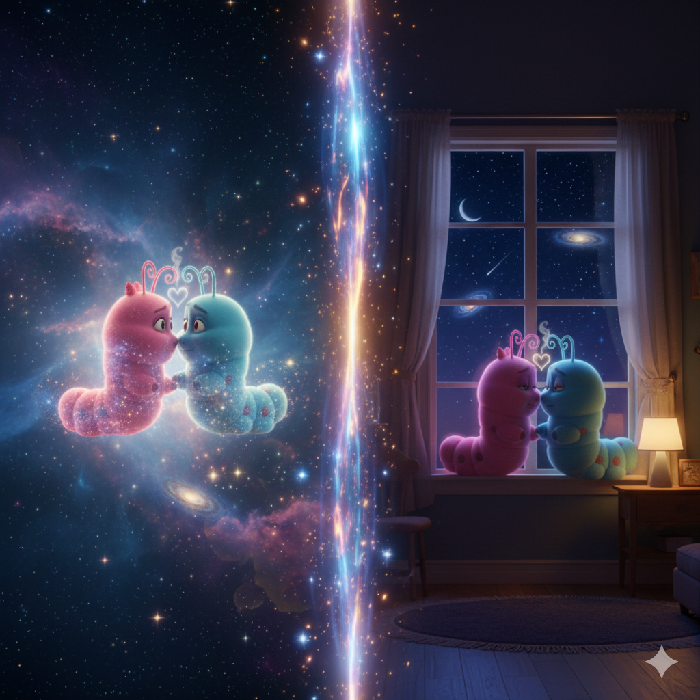
"In una dimensione parallela sono stata abbracciata a te tutta la notte." - Parole che facevano male e bene insieme. Lei immaginava abbracci in altre dimensioni. "Quando mi parli di dimensione parallela, ora mi viene in mente Interstellar ancora e cosa combina il tempo" scrisse lui. Due bruchi separati dalla realtà, ma uniti in qualche piega dell'universo. L'Amore vero non ha bisogno di essere toccato per esistere.
10 Dicembre 2024
Adoro i Tuoi Audiolibri
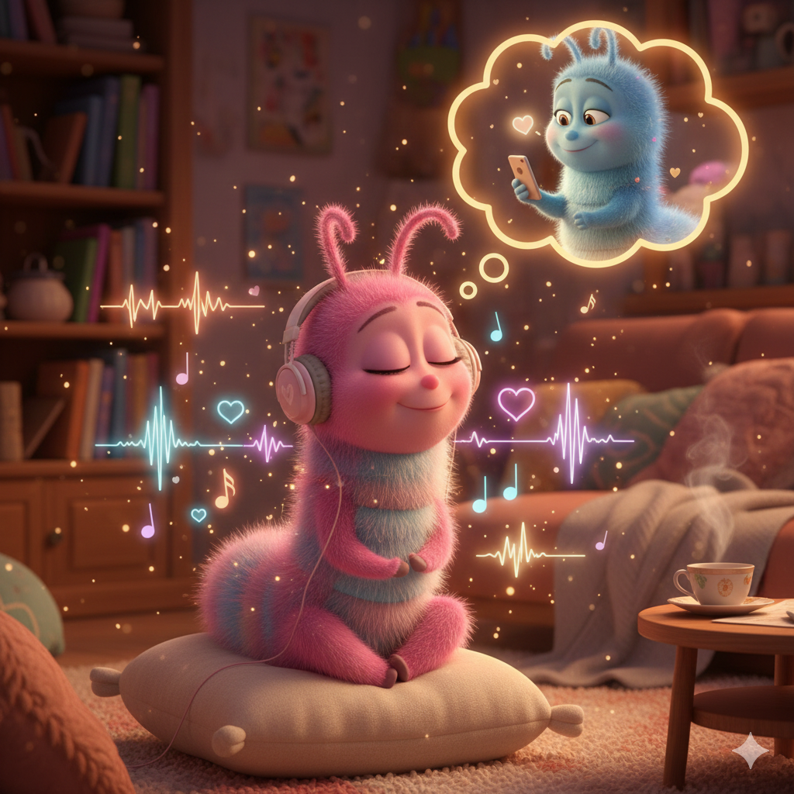
"Buongiorno Fabio, adoro i tuoi audiolibri, lo sai. Sì, c'è da raccontarsi, da parlare per ore." - Lui aveva iniziato a mandarle vocali lunghi. Pezzi di anima registrati con la sua voce. Lei li adorava, li ascoltava e riascoltava. "Sono contento che apprezzi queste mie parole" rispondeva lui. La voce portava con sé timbri, pause, respiri. Ogni audio era un abbraccio sonoro, ogni ascolto era intimità rubata alla distanza.
15 Dicembre 2024
Se la Mia Situazione Fosse Diversa
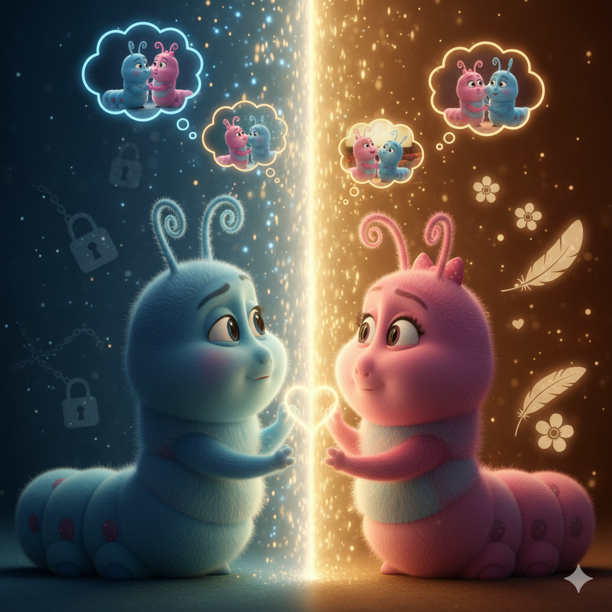
"Questo messaggio è stato eliminato." "Avevo scritto, poi ho cancellato." "Se la mia situazione fosse diversa saremmo già finiti a letto. Ti avrei mangiato." - Quel giorno lei trovò il coraggio di dire la verità. Parole cancellate e poi riscritte. "Quando sarai uscito dalla tua grotta se mi vorrai ci sarò" scrisse lei. Due bruchi con vite complesse, ma con sentimenti cristallini. L'attesa non era un ostacolo, ma parte del loro percorso.
7 Gennaio 2025
Ti Immagino Mentre Dormi
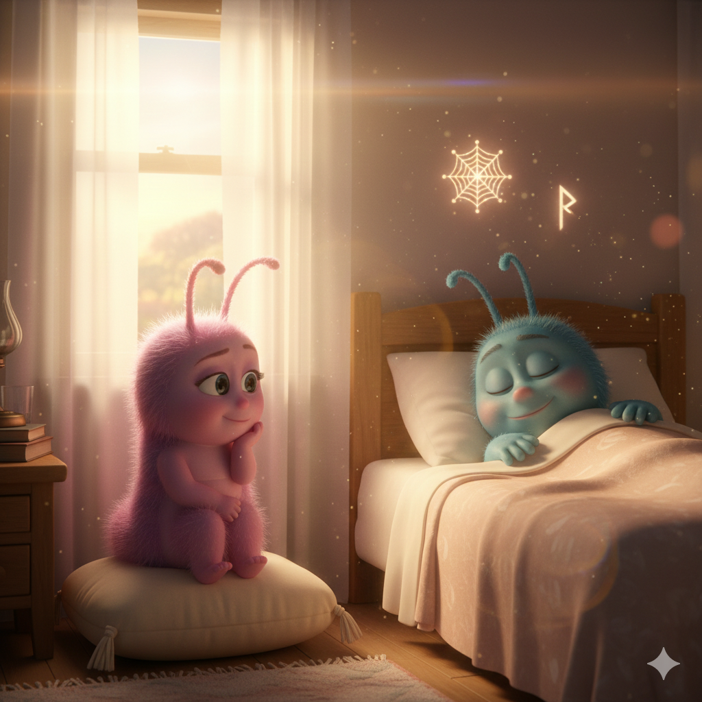
"Ti immagino mentre dormi. Mi è sempre piaciuto guardare le persone che dormono. Si vedono cose che da svegli non mostrano." - Lei amava guardare le persone dormire. C'è qualcosa di puro in un volto che dorme. Lui parlava della rete di Wyrd e di Dagaz. "Sono più convinto di farmi un secondo tatuaggio" scrisse. "Da quando ho aperto gli occhi mi è rimasta sempre voglia...di te." La voglia stava diventando bisogno.
14 Febbraio 2025
Buongiorno ☀️
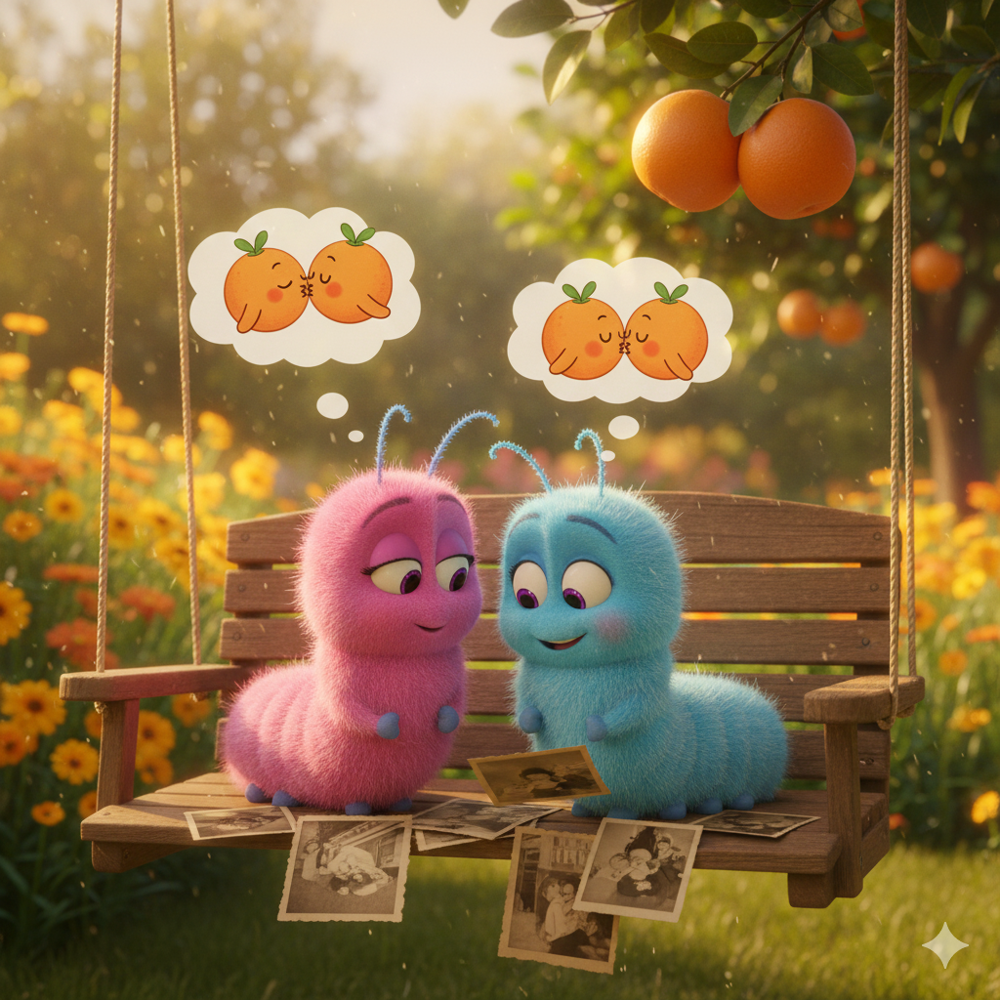
"Buongiorno Franci ☀️" - Ogni mattina iniziava così. Un sole, un saluto, una promessa di esserci. San Valentino arrivò, ma loro non ne avevano bisogno. "Ti amo. Dal primo giorno (e non ho bisogno di San Valentino per dimostrartelo)" aveva scritto lui. L'Amore vero non aspetta le date sul calendario. Si manifesta nel "buongiorno ☀️" quotidiano, nei messaggi all'alba, nei "come stai?" sinceri. Ogni giorno può essere San Valentino quando ami davvero.
15 Marzo 2025
Ricordami di Chiederti Una Cosa
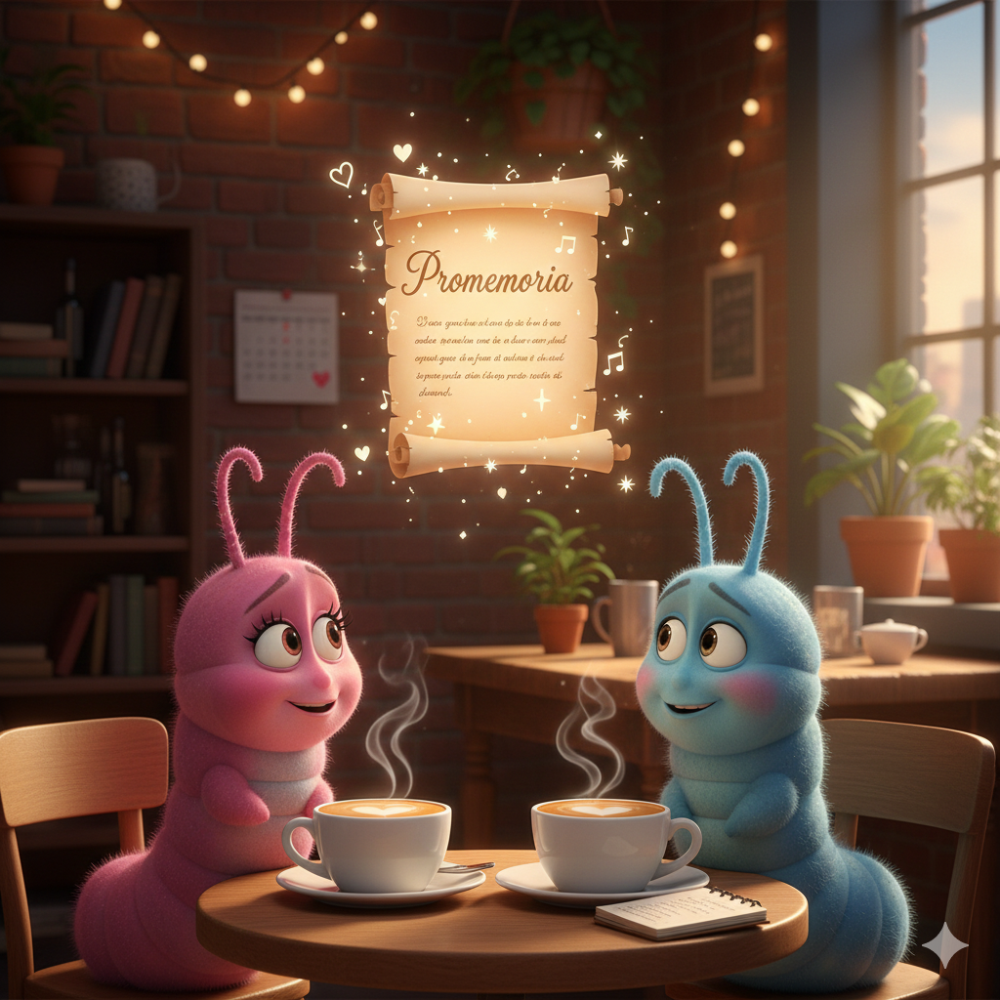
"Quando saremo vis a vis, ricordami di chiederti una cosa" - La primavera portò promesse di incontri. Ogni conversazione aveva le sue parentesi - "(quando ci vedremo)", "(ricordami di dirti)". Promesse in sospeso come regali incartati. Sapevano che quando si sarebbero guardati negli occhi senza schermo, avrebbero avuto mille cose da dirsi. E forse non avrebbero detto nulla. Solo si sarebbero abbracciati. E sarebbe bastato.
20 Maggio 2025
Vedrai che Tornerò
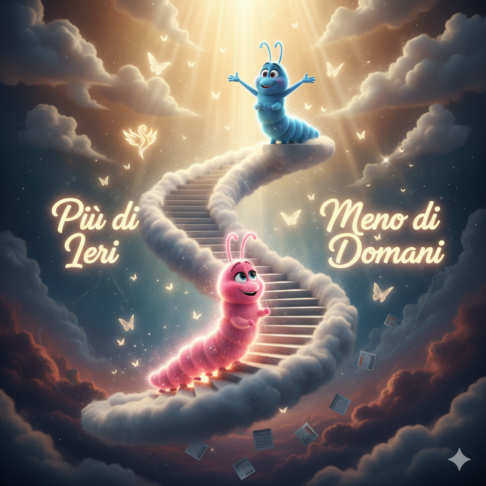
"Vedrai che tornerò, meglio di prima e meno di domani." - Questa frase divenne il loro mantra. "Meglio di prima" significava crescita continua. "Meno di domani" significava che il meglio doveva ancora venire. "Ogni giorno, ogni domani per me significa essere una persona migliore di ieri ed ogni volta che tornerò da te sarà per donarti una versione più bella del presente" le aveva scritto lui. Si stavano trasformando. Il bozzolo stava prendendo forma.
21 Giugno 2025
La Luce Cerca Spazio
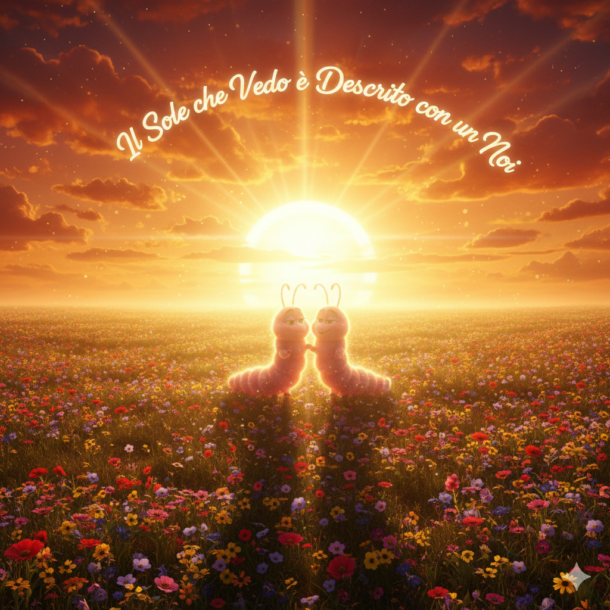
Il 21 giugno, il giorno più lungo dell'anno. La luce aveva trovato il suo spazio massimo. E anche loro avevano trovato il loro ritmo. "Come hai detto 'Vedrai che dopo la tempesta c'è sempre il sole'... io ci credo. Non voglio essere la tempesta per te, ma solo la luce per giorni migliori" le aveva scritto lui. Erano diventati l'uno la luce dell'altro. Due bruchi che camminavano verso la luce, insieme.
15 Ottobre 2025
Grazie
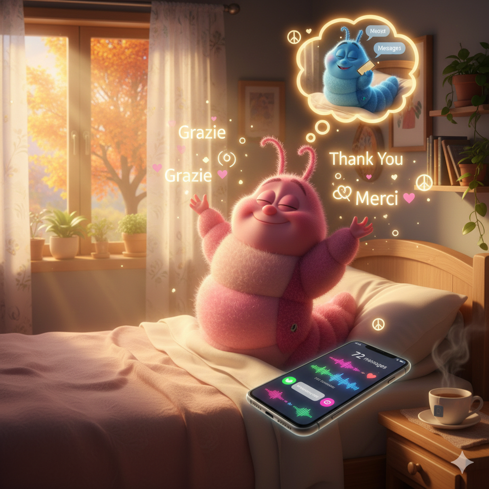
"Buongiorno Fabio, grazie dei tuoi audio. Ho dormito finalmente più del solito." - Ottobre li trovò più sereni. Lei aveva iniziato a dormire meglio. "Grazie" era diventata la parola più ricorrente. Grazie per gli audio, grazie per la pazienza, grazie per esserci, grazie per aspettare, grazie per capire. Avevano capito che l'Amore vero è fatto anche di riconoscere i doni che l'altro ci fa. Ogni "grazie" era un mattone della loro casa.
5 Dicembre 2025
Questo Tuo Lato Non L'Ho Mai Visto
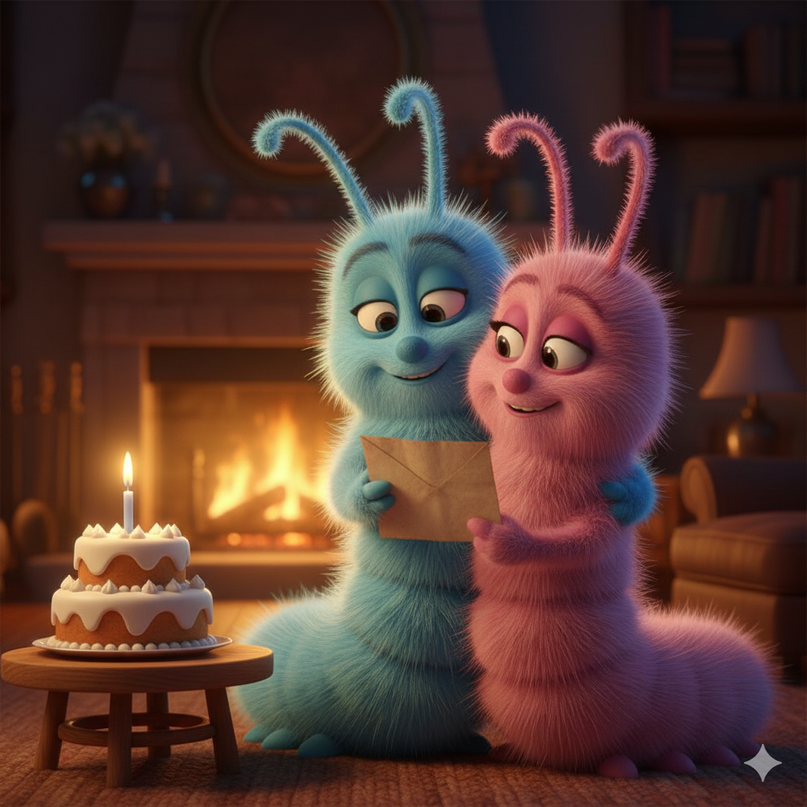
"Buongiorno Fabio. Questo tuo lato non l'ho mai visto, dov'è?" - Dopo più di un anno insieme, continuavano a scoprirsi. Ogni giorno lui mostrava un lato nuovo. Lei si meravigliava ancora, si innamorava di nuovo. "Come fai a sorprendermi ancora?" gli chiedeva. Le persone vere sono come libri infiniti - puoi leggerli tutta la vita e scoprire sempre nuove storie. Mancavano pochi giorni al momento perfetto. Al giorno della metamorfosi.
20 Dicembre 2025
Buon Compleanno - La Metamorfosi 🦋
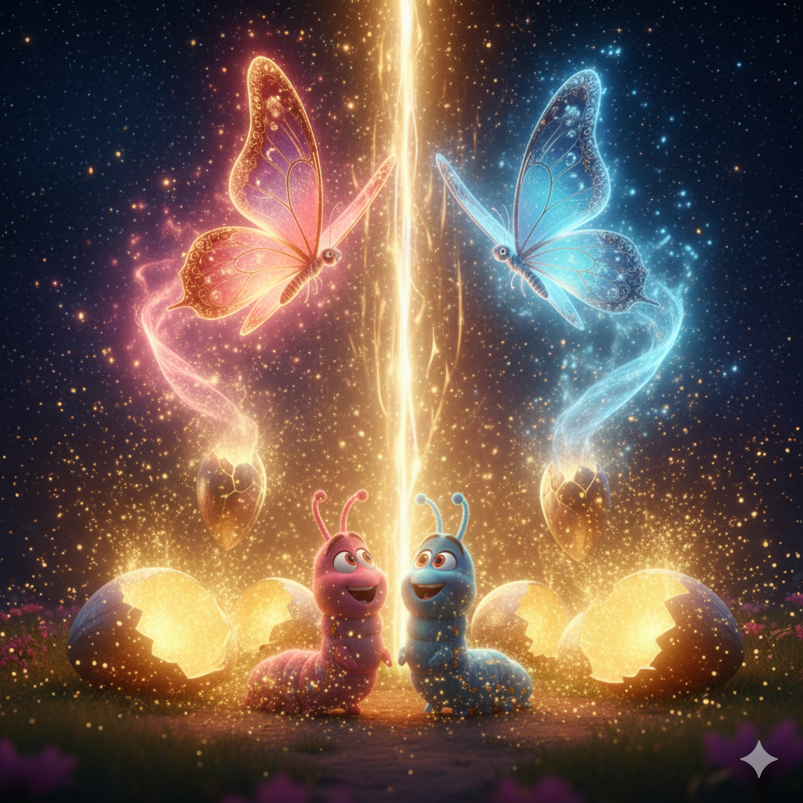
20 dicembre 2025. Il suo compleanno. Ma anche qualcosa di più grande. In quel momento speciale, mentre rileggevano insieme la loro storia, sentirono qualcosa cambiare. Il bozzolo si aprì. Non erano più gli stessi bruchi nervosi del cinema di un anno prima. "Guarda" sussurrò lui, indicando il cielo. Due farfalle volavano nel tramonto invernale. "Siamo noi" disse lei con gli occhi lucidi. "La storia dei bruchi è finita. Ma la storia delle farfalle... sta solo iniziando." Si abbracciarono stretti. Un abbraccio che sapeva di trasformazione, di promesse mantenute, di futuro. "Buon compleanno, Amore mio" disse lui. "Buon primo giorno, farfalla mia" rispose lei. E volarono. Insieme. Per sempre. ∞🦋